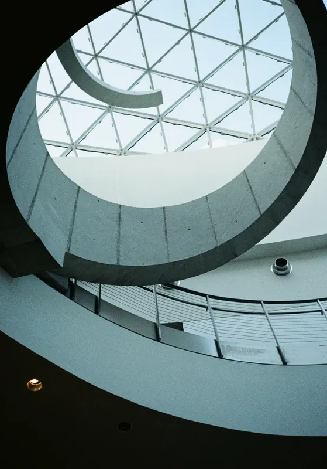
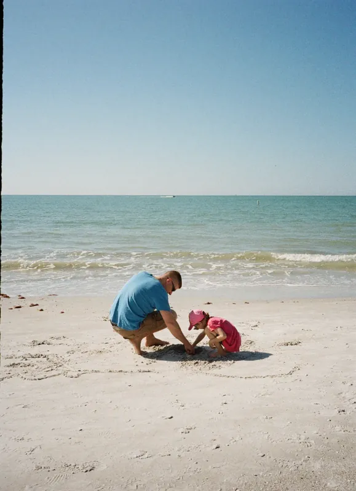
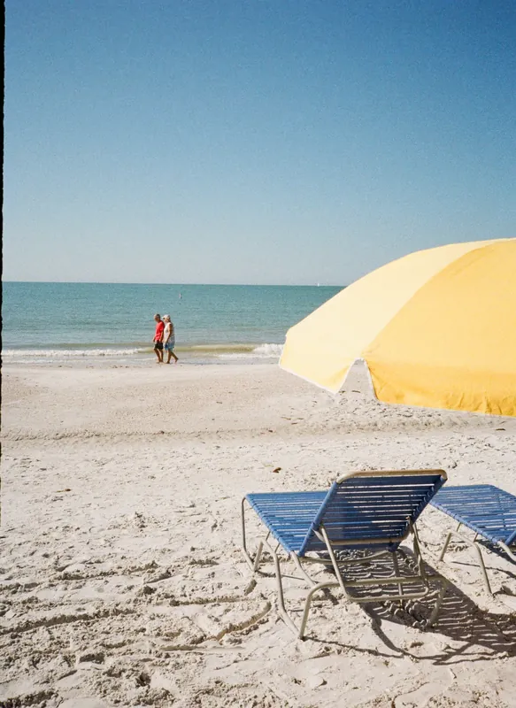
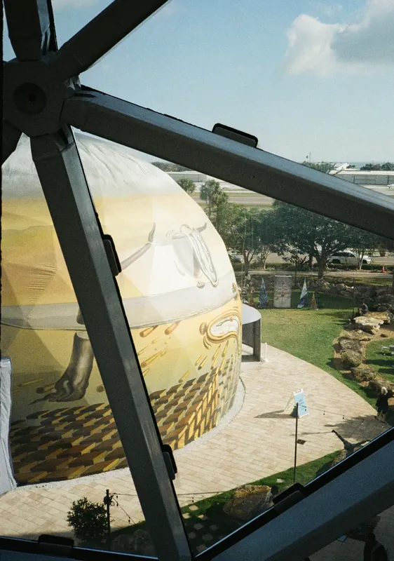
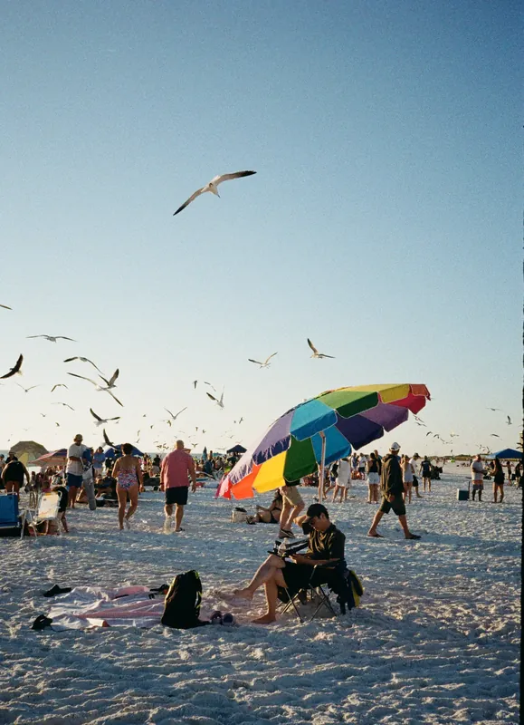
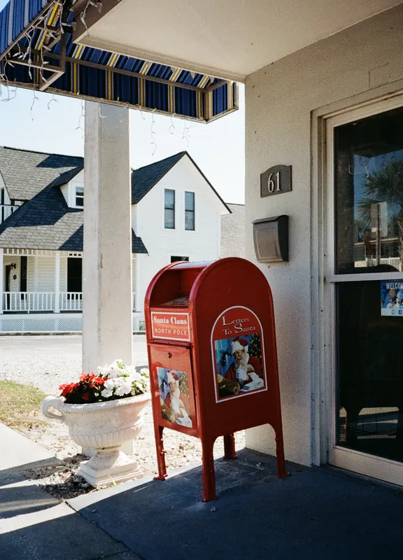
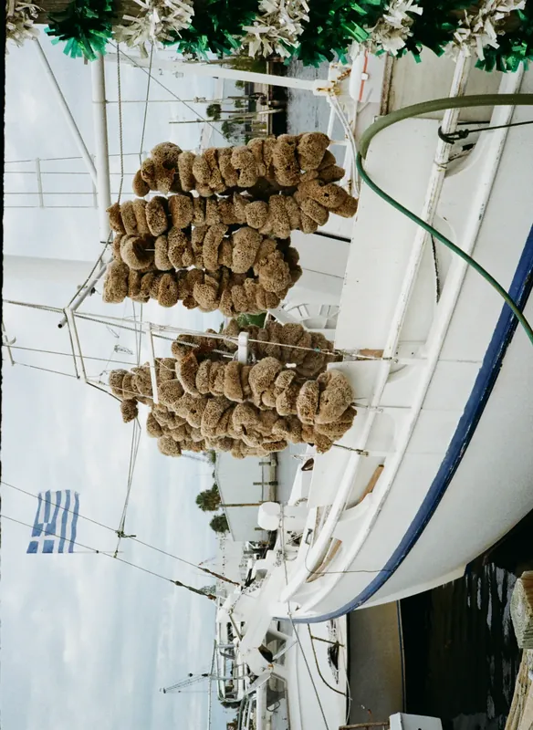

03Roll 678Gulf Coast · 湾岸
半格 18×24
52 帧 / 选 12
佛罗里达
联系表整卷 52 帧移上去看放大 · 点开看片台 · 红框 = 选用
 678·22L日落，涉水
678·22L日落，涉水墨西哥湾这一侧的沙是白的，白到过曝。伞和躺椅在沙上排成没有规律的阵列，海鸥被人惊起，又落下。
这一卷几乎没有正面的脸，都是背影、伞面、椅子的斜线。有几张干脆只剩下海平线和天上的一个点——竖构图把水压到最低，剩下的全部让给天。
中间插进来一段室内：玻璃穹顶，三角网格，和网格外面的棕榈。

678·11R穹顶 678·10L鸥群
678·10L鸥群
678·09R红衣，独自
678·07R黄伞与蓝椅把水压到最低，剩下的全部让给天。卷 678
 678·12L玻璃网格外
678·12L玻璃网格外
678·13R网格与穹顶 678·19L蓝椅列队
678·19L蓝椅列队
678·21L彩虹伞与鸥 678·11L海平线
678·11L海平线
678·23L红邮箱
678·26R悬着的海绵本卷共 52 帧版面选用 12 张，整卷见上方联系表。半格 18×24，佛罗里达。